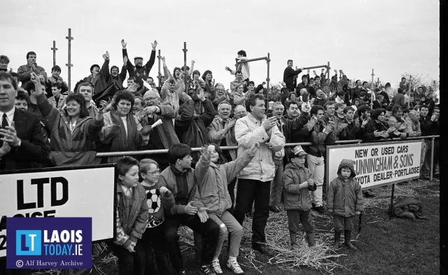
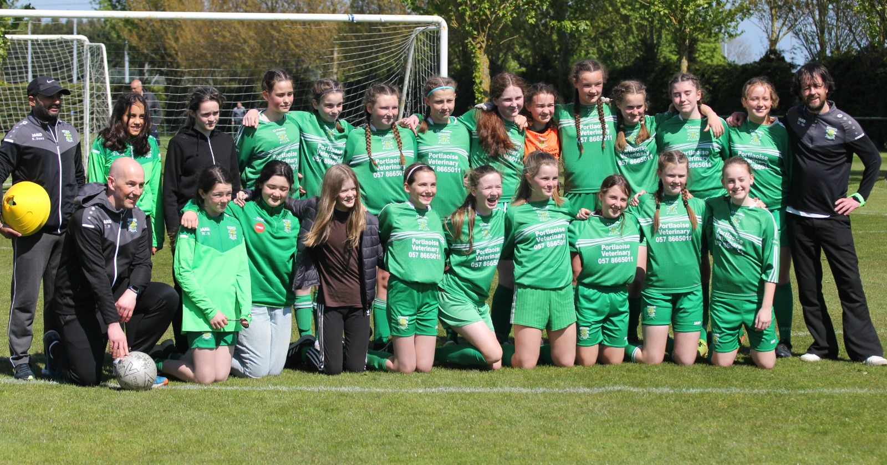

Portlaoise AFC
One Club



Welcome to the official website of Portlaoise AFC. We are a community football club based in Portlaoise, Ireland. Our club was founded in 1966 and has a rich history of success in local and regional competitions